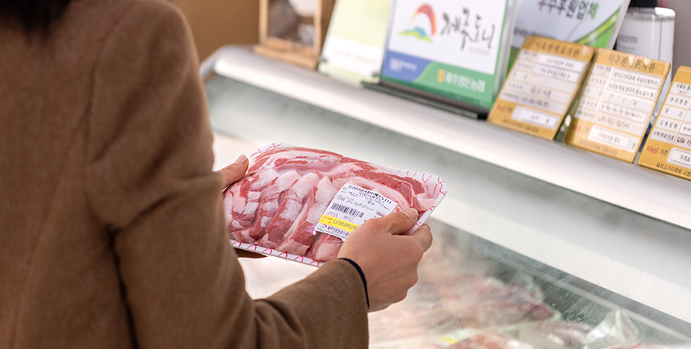
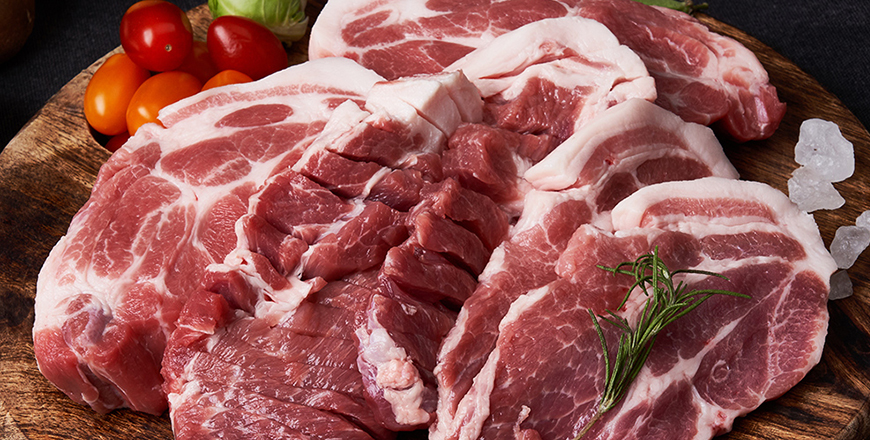

기획취재콘텐츠
- Home
- 제주라이프
- 기획취재콘텐츠
所有的好都有根据，济州岛养猪产业 第二篇새로운 글


得天独厚的醇香，纯净的济州岛猪肉
作为岛屿的这一地理特征完美阻隔了外来的恶性家畜传染病。加上得天独厚的自然环境——清新的空气、纯净的水、温和的气候，为生产高品质猪肉提供了最佳的培育条件。在天赐的自然条件下饲养的济州岛猪肉所具备的优良品质也在通过科学分析不断得到证明。

※ 来源 : 韩国主要猪肉生产地区肉质分析报告书
济州岛黑猪的赤色较深，决定优良肉质的雪花纹理（肌间脂肪）比普通猪要密集。此外，多不饱和脂肪酸的含量高，胆固醇含量相对较低，在健康功能性方面也非常卓越。由于肉质坚韧，口感醇香，脂肪肥美，因此能轻易抓住美食家的味蕾。
虽然不是济州传统黑猪，但在济州饲养的白猪（LYD杂交种）和其它地区饲养的猪肉相比，红色较深，花纹较高，同样胆固醇含量低，多不饱和脂肪酸含量高。 济州猪在肌肉形成、性感评价肉色、物性（口感）项目上表现出强势，特别是物性项目，消费者能够认出差异，显示出明显的差异。

※ 来源: 畜产品质量评价院畜产品流通信息各期间竞价
※ 数据收集期间 : 2017年1月1日 ~ 2019年12月31日
※ 数据收集期间 : 2017年1月1日 ~ 2019年12月31日
济州岛猪肉是在纯净地区以优良的种猪和饲养技术为基础培育，因品质获得认可，在韩国是作为高级猪肉进行着销售。除济州岛以外，在2017年到2019年的3年间，韩国猪肉的平均竞价为每千克4,104韩元，而同期的济州岛猪肉的竞价平均每千克为5,282韩元，比其他地区的猪肉竞价平均高出了约20%。且在韩国流通的猪肉中，济州岛生产的猪肉就占了25%。
成为品牌的猪肉
济州岛的养猪产业是以合作社形态的共同体为中心发展的。由各合作社与农场负责从种猪育种到饲养环境管理、系统性的生产及构建品质管理系统等，为生产优良均一品质的猪肉而不断做出着努力。此外，也在通过猪肉批发零售及加工品研发等第六产业化，确保着产业竞争力。济州岛养猪农协的高级猪肉品牌“JEJU DONY”从生产到流通，统一管理着包括23家品牌签订农户、50家出口合同农户、87家种猪供应农户等济州岛内的100多家农户，以此生产出均一的高品质猪肉。为提高及传播济州岛的养猪品牌形象，在流通、市场营销等的投资层面也丝毫没有吝惜。济州岛东部畜产务农合作社正通过积极引进智能畜舍、构筑环保系统等与地区合作共赢的投资方式，致力于生产高品质的猪肉。同时，还成立了济州岛猪肉加工及流通品牌“Montrak”，向济州岛内外介绍着济州岛美味的猪肉。
从农场到餐桌，济州岛高级猪肉品牌“JEJU DONY”
“JEJU DONY”是济州岛养猪农协（合作社社长高权镇（音））管理的济州岛高级猪肉品牌。济州岛养猪农协为了以优良的品质为基础，生产管理并流通济州岛猪肉，在2007年成立了“JEJU DONY”品牌，以消费者喜爱度为基础，从生产到流通，进行着系统管理，提供着标准化的高品质猪肉。
- 济州岛养猪农协合作社社长高权镇正在检查加工前的猪肉状态。 -
济州岛养猪农协通过组织化及系列化的管理品牌签订农户，在种猪、饲料、饲养管理、饲养环境等方面有别于一般猪肉，以批发零售的方式销售着高品质的济州岛产品牌猪肉。
系列化是指从农户到生产“JEJU DONY”的步骤为止，按照种猪、饲料、流通、出口和肉加工等不同阶段运营及管理的体系。

2012年，由济州岛养猪农协设立的济州岛JEJU DONY遗传中心引进优良血统的种猪，育种了与济州岛适配的种猪，并供应给了岛内的农户。2019年有87家农户得到了济州岛养猪农协JEJU DONY遗传中心的种猪供应，共3,539头，占据了济州岛278家养猪农户的25%。
得到种猪供应的农户可以喂食在济州岛养猪农协的纯净混合饲料工厂生产的低气味、提高生产性的优质饲料，从而生产出高品质猪肉。畜舍的粪便可以经过济州岛养猪农协的家畜粪便资源化工厂处理成液肥、堆肥和农业用水，从而解决个体农户处理粪便时的困难。农户也可以更加集中精力地管理猪的生长环境与品质。在这一基础上，济州岛养猪农协还运营了可以根据各农场进行持续性针对管理的动物医院，在生产和流通方面，为农户提供针对性咨询，并积极提供可生产优质猪肉所需的专业化支援。
济州岛养猪农协于2018年建立了畜产品综合物流中心，占地26,851平方米，包括地下1层、地上3层，总面积为10,515平方米规模。在畜产品综合物流中心一天可以屠宰1,500头猪。此外，还构建了处理屠宰过程中产生的废水的设备及交叉污染防御系统。仅2019年，畜产品综合物流中心就屠宰了354,438头济州岛猪。
在系统化管理下生产的济州岛猪肉“JEJU DONY”的品质得到认可，连续8年获得了优秀畜产品牌认证。不仅如此，还获得了KAPF农林部畜产品品牌竞赛的优秀奖和韩国畜产品品牌竞赛的总统奖等，可谓成绩斐然。
- 在出口肉加工厂会对屠宰的猪进行从部位分解到真空包装等，
是向消费者提供猪肉前的最后加工过程。 -
是向消费者提供猪肉前的最后加工过程。 -
“JEJU DONY”对于消费者来说也成为了值得信赖的济州岛猪肉品牌，深受大众的喜爱。“JEJU DONY”是在济州岛养猪农协的出口肉加工厂（济州）和龙仁肉加工厂（龙仁）加工后，提供给岛内50多家餐饮企业。同时也在包括济州市农协Hanaro超市在内的22家高级线上食品流通平台“Market Kurly”和畜产品直销平台“Meat Box”等线上、线下超市及流通平台积极进行着销售。

- 在济州岛养猪农协出口肉加工厂经营直营店。
可以低价购买新加工的新鲜猪肉。 -
可以低价购买新加工的新鲜猪肉。 -
济州岛养猪农协计划努力提高“JEJU DONY”品牌的知名度，研发出针对消费者的商品。同时通过试吃活动、直销市场，直接与全韩国消费者面对面来宣传济州岛猪肉的优秀性。此外，随着独居及两人家庭的增多，对于小包装的需求也在扩大，因此将构建相应的设备、人力、事后处理方案等相关系统，并确保批发零售小包装猪肉的网络商城渠道。

- ⓒ济州岛养猪农协经 -
2020年正构建专属于‘JEJU DONY’品牌的网络商城和手机应用程序，并促进可以突显济州岛猪肉优点的进攻型营销战略。此外，也会结合各地区活动，坚持不懈地举办品尝会。
- 济州岛养猪农协经济事业总部组长梁敬美（音）
同时，为提高质量及生产管理能力，也将尽一切努力。计划在JEJU DONY遗传中心设立人工授精中心（AI），生产及供应均等品质的济州岛种猪，通过稳定的精液供应，提高每年都会成为问题的夏季受孕率。在畜产品综合物流中心，则是计划在屠宰线上安装VCS2000（屠宰猪自动识别机器），将总的精肉量和精肉率、分割部位的精肉量和精肉率检测值数据化，在生产、屠宰、等级判定、加工等阶段确保先进的屠宰系统，从而提高竞争力。
이전글
다음글